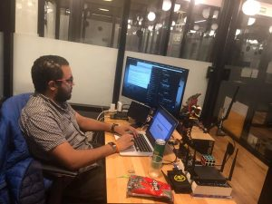

حوار خاص مع محمد عبد الباسط النوبي – الخبير العالمى فى الأمن السيبراني.
تقول مارى كوري-وهي أول امرأة تحصل على جائزة نوبل والوحيدة التي حصلت عليها مرتين وفي مجالين مختلفين مرة في الفيزياء عام1903م.وأخرى في الكيمياء عام 1911 م ) ” ليس في الحياة شيء يدعونا إلى الخوف، وإنما كل شيء يدعونا إلى الفهم.. والآن حان الوقت لكي نزيد ما نفهمه حتى نقلل مما نخافه.”
ولذلك اعود اليوم بعد أكثر من 100 عام على هذه الكلمات واردد نفس المقولة ” الآن حان الوقت لكي نزيد ما نفهمه ” ومن أهم الاشياء التى تتصف اليوم بالغموض هو مفهوم الامان الرقمى للعلامة التجارية.
وعندما اريد ان اتحدث عن الامان الرقمى و الأمن السيبراني وأفهم ماذا يعنى و ما هى اهم الافكار والنصائح التى يتوجب على العلامة التجارية فى المستقبل أن تعتمد عليها كان لابد من أجراء هذا الحوار مع الخبير التقنى العالمى محمد عبد الباسط النوبى .
محمد عبد الباسط النوبي هو المبرمج المصري والذى يصنف على انه من (الهاكرز الاخلاقيين ) وقد تم إختياره من قبل شركة فيسبوك ضمن قائمة الشرف الخاصة بالخبراء الأمنيين ذوى القبعات البيضاء لأعوام 2013 و2014 و2015 و2016 و 2017 و 2018 و 2019 على التوالى. بالاضافة الى عمليات أكتشاف الثغرات في العديد من المواقع الشهيرة مثل موقع (ياهو ) و (تويتر ) و (جوجل ) و (أمازون ) و ( سونى ) و أيضاً موقع ( نوكيا ) و ( باى بال ) و (ادوبى ) وغيرها من المواقع العالمية . ويعرف الهاكرز الاخلاقيين على أنهم قراصنة الإنترنت الهادفين لاكتشاف الثغرات بهدف علاجه او تحسين جودة الموقع، وليس من أجل استغلالها ضد المواقع الإلكترونية أو مستخدميها.
-تشرفت بمقابلتك ويسعدنى أجراء هذه المقابلة معك أولاً من أين أنت ؟
— انا محمد عبد الباسط النوبى، ولدت بمدينة إسنا، محافظة الاقصر.
-لماذا الامان الرقمى هو مجال تخصصك ؟
– لم يكن الامن الرقمى مجال تخصصى منذ البداية ولكن كانت البرمجة، بداية الامر كانت عندما سألت والدى سؤال بسيط جدا ولكن كان فارقاً جدا فى حياتى، عندما حصلت على اول كمبيوتر لى على ما اتذكر فى عام ١٩٩٩، سألته: “كيف يمكننى عمل تطبيقات مثل التطبيقات التى استخدمها؟
” بالبلدى “انا عايز اعمل برامج بدل ما ابقى مجرد مستخدم ليها”، كان سؤالى لوالدى مفاجئ نظراً لأنه كان متخصص فى العتاد المادى “ال Hardware” اكثر من السوفتوير إلا انه قام بإجابتى لأنه بالنسبالة سؤال عام، قام بتوجيهى فى هذا الوقت رغم شحوح المصادر والانترنت والعالم بصورتة الحالية منافى تماما بالشكل اللى احنا شايفينه فى الوقت الحالى مكانش فى لا جوجل ولا Bing ولا محركات بحث مهمه تذكر الا محركات بحث بدائية مثل Altavista، ودليل انترنت للجيب لمواقع الانترنت على ما اتذكر، كانت اجابة والدى هى: “لغة “بيزيك” و “باسكال” و Visual Basic” و “C”، بمجرد ما سمعت الكلمات المفتاحيه دى ابتديت البحث بقى فى كل الاماكن اللى اعرفها سواء فى مجلات او جرائد او اى شئ بيصدر بشكل اسبوعى يكون بيتكلم عن نفس الموضوع، ابتدي ادور على ناس عندها نفس الشغف دا وافضل اقرأ شفيرات مصدرية كتير علشان افهم هيا ايه وبتعمل ايه وشغاله ازاى بس كانت الفتره الاصعب عليا هى اختيار لغة برمجة معينه علشان اتقنها خصوصا انى كنت متأكد ان لغه واحده مش كفاية “او فى الوقت دا يعنى كان دا اعتقادى” واللى اتغير تماما فى المستقبل، ابتديت ابحث واقرا عن ازاى اقوم بتصميم وبرمجة تطبيقات لأجهزة سطح المكتب والموبايل فى ذلك الوقت العامل بنظام Symbian يمكن دا كان سبب تسميتى بالاسم اللى انا عليه فى الوقت الحالى، ومكانش الويب فى اهتمامى بشكل كامل، الويب كان الوسيلة مش الغاية نفسها، بعدها ابتدى توجهى يروح ناحية تكنولوجيا وتطبيقات ال Client-Sever و برمجة ال Sockets ودا اللى فتح عينيا شوية على مجال الشبكات اللى برعت فيه بردو وساعدنى بشكل كبير جدا انى افهم طرق التواصل مابين تطبيقين غير متواجدين فى نفس المكان ومن هنا بدأ مشوار الامن المعلوماتى.
-كم عدد الثغرات التى أكتشفتها حتى أجراء هذا الحوار ؟
— حقيقة لا يمكننى الاجابة على هذا السؤال ليس فقط لأنى لا يحضرنى العدد فى الوقت الحالى نظرا لكثرتهم بل لان ببساطة الثغرات ليست بعددها وانما بتأثيرها، هناك ثغرة واحده قد تكون اخر مسمار فى نعش علامة تجارية كبيرة كما شهدنا ما حصل مع Facebook و Google وغيرهم.
-هل يمكنك وصف Seekurity في ثلاثة أسطر أو أقل؟
Seekurity is a company that aims to Protecting businesses and secure the perimeter and beyond by breaking the what so called “ego-system” in a smart not a hard way.
-هل فعلاً هناك أمان رقمى ؟
— الامان الرقمى هو بالاساس وعيك الامنى، بعيداً عن الدخول فى التفاصيل الخاصة بالامان الرقمى من ادوات مادية وتطبيقات وجدران نارية، كل ما سبق لن يحميك بنفس قدر وعيك الامنى.
-لماذا مقرك في المكسيك ؟
— المكسيك بالرغم من ان تصنيفها بأنها دولة من دول العالم الثالث الا انها صاعدة بشكل كبير جدا فى المجال التكنولوجى، الشركات فى الوقت الحالى بتتوجة لعمل مقرات داخل المكسيك مقارنة بالولايات المتحدة الامريكية والتى اصبحت لا تحتمل من الناحية المادية بالنسبة للشركات الناشئة، هنا تجد Samsung و Google , Microsoft , IBM و Oracle وغيرهم الكثير، المكسيك دولة من الدول المؤثرة جدا فى امريكا الجنوبية.
-هل فى تتوقع المستقبل ان يكون الامان الرقمى جزء من الهوية للعلامات التجارية العادية ؟
— دا بيحدث جدا فى الوقت الحالى، فى المستقبل توقعى ان دا هيتطور ليشمل الامن الرقمى فى مرحلة ما قبل تأسيس العلامات التجارية نفسها، على سبيل المثال قبل ما بتقوم شركة بعمل مخزن اول شئ بتفكر فيه قبل ما نفتح المخزن محتاجية كاميرات مراقبة موصلة ومدارة عن بعد من خلال نظام مراقبة مركزى، دا لو قيسناه بالامن الرقمى للخوادم السحابية هنلاقية نفس الكونسبت، العالم فى الوقت الحالى على قدر كافى من الوعى ان الامن الرقمى جزء لا يتجزأ ولا يقل اهمية عن الامن المادى.
-ما هي اللحظة الأكثر فخرًا منذ إطلاق Seekurity ولماذا؟
— جميع انجازاتنا فى Seekurity بغض النظر عن حجم الانجاز نفسه هى بمثابة لحظة فخر،اكثرهم فخراً هى تأسيس الشركة هنا بشكل رسمى، بعد التأسيس الرسمى بحوالى ٥ شهور طلبت منا الجهة الحكومية المسؤولة عن التأسيس نفسها العمل معنا والحقيقة دى كانت من اسعد اللحظات.
-كيف يمكن للعلامات التجارية الاستفادة من الثغرات التى تكتشفها ؟
— ابسط اجابة على السؤال دا هي حماية سمعة العلامه التجارية نفسها، زى مانت شايف فى الوقت الحالى علامات تجارية كبيرة جدا ابتدى تفقد قيمتها بسبب تسريب البيانات والمشاكل الامنية بداخلها.
-ما هى نصيحتك لم يبحث عن الثغرات ؟
حاول التركيز بشكل كامل على الهدف، دايما هتلاقى شئ مختفى عن الانظار موجود فيه ثغرة، لا تستهين بها حتى لو كانت ضعيفه.

-لماذا يرتبط مفهوم من يعمل بالامان الرقمى لدى الناس بأنهم خطر على المجتمعات ؟
— سؤال جميل جدا، دا يرجعنا عن انواع او الوان الاشخاص العاملين فى مجال الامن الرقمى، انواع ال Hackers بشكل اساسى ٣ انواع، ال Whtehat وال Blackhat وال Grayhat النوع الاول هو النوع الاخلاقى الذى يقوم بالابلاع عن الثغرات فور اكتشافها دون انتظار اى مقابل من خلال متابة قواعد الابلاغ او Responsible Disclosure Rules، على النقيض ال Blackhats وهم الذين يستخدمون قدراتهم فى الاختراق على الابتزاز والتخريب، ما بين الاثنين هناك منطقة رمادية يعود فيها قرار الابلاغ او الاستغلال للثغرات الامنية المكتشفه للهاكر نفسه، اذا كان هناك اى منافع شخصية من الثغرة فيستغلها الهاكر ويقوم بخرق القوانين اما ان كان المنفعة الاكبر فى ابلاغها فيقوم بإبلاغها بشكل اخلاقى.
النوع الواقع فى وسط اللونين الابيض والاسود هو فى الحقيقة اللون السائد على اللون الابيض ايضاً، العمل فى مجال الامن الرقمى بدون اى قواعد واسس هذا ما يخيف المجتمعات والمؤسسات والعلامات التجارية، هذا اللون هو ما بث الخوف بداخل كل من ليس لديه فكرة عامة عن الالوان والانواع الاخرى، دا بعيداً عن ان بداية الهاكينج لم يكن هناك اى الوان وكان اللون الاسود هو السائد وهذا ما اعطى هذه التغذية المرتجعة والفكره العامه عن ان كل الهاكرز اشرار والتى تغيرت على مر التاريخ.
بالطبع لم اتحدث عن من افضل من من من ناحية القدرات التقنية لأنهم بشكل كامل كلهم على نفس القدر.
-ما هو لونك المفضل ؟
— الاحمر والاسود.
-كيف تستمتع بقهوتك في الصباح؟
كوب القهوه ليس له اى طعم بدون قراءة اخبار العالم الامنية والمعلوماتية.
-ما هو أفضل كتاب قرأته في العام الماضي؟
Inside Radio: An Attack and Defense Guide
-أين هو مكانك المفضل لتفكر فى المستقبل ؟
فى مكتبى وعلى شواطئ المكسيك الغنية بالألوان الطبيعية.
-هل ما زلت تتواصل مع أصدقائك القدماء ؟
بكل تأكيد ولكن ليس كما كان سابقاً، انت تعلم بتقدم السن تتغير الاولويات ولكن لن اسمح بهذه القاعدة التأثير على علاقتى بكل من لهم فضل على.
-ما هى اول وظيفة لك وكم كان عمرك ؟
– إدارة Computer Center قبل شراء حاسوبى الشخصى، وكان عمرى فى ذلك الوقت ١١ سنة.
-من الذي يلهمك؟
— اشخاص عدة فى مجال امن المعلومات منهم على سبيل المثال لا الحصر Tavis Ormandy و Samy Kamkar و Moxie Marlinspike و Marcus Menges و Simone Margaritelli و Luca Bongiorni وغيرهم الكثير.
شكراً محمد عبد الباسط كان الحوار معك ملهماً.
كان حوار متميز جعلنى أتسائل وابحث مرة أخرى حول شكل المستقبل.!! وكمقدمات وحينماً كان الاعتماد على القوة البرية في القرن الـ19 . وكان القرن الـ20 سمته الاساسية هو الإعتماد على القوة الجوية. فأن القرن الـ21 سيكون الإعتماد على التجسس السيبراني، والإختراق والتنصت وجمع وإعتراض المعلومات كجزء أساسي يسبق أي عمل عسكري او حصار اقتصادي على المستوى المجتمعى العالمى .
واليوم ونحن نعتاد على اخبار وتقارير عالمية واضحة حول هذه التهديدات السيبرانية. فمثلاً هذا تقرير يمكنك الاطلاع عليه فى المصادر يوضح أن شبكة القوات الجوية الباكستانية تم إختراقها قبل (٥) شهور من بدأ الصراع الهندي الباكستاني، بواسطة هاكرز يستخدمون أدوات متقدمة وأساليب تخفي متطورة، إستهدفو ضباط القوات الجوية وكبار المسؤولين بالجيش الباكستاني.
وهذا خبر ان شركة Airbus تعلن رسمياً ان تعرض بعض أنظمتها الداخلية تعرضت للإختراق بما في ذلك أنظمة معلومات الطائرات التجارية، وأيضاً معلومات حول الموظفين لديها .
وأخيراً وبعد أن أطلعت على التقرير السنوي لإدارة الأمن القومي الأمريكي DNI (المسؤولة عن ١٦ وكالة أمنية) والذى يضع التهديد السيبراني كأول خطر يهدد العالم بقيادة روسيا والصين وإيران وكوريا الشمالية! ثم تهديد أسلحة الدمار الشامل WMDs ثم الإرهاب!! وبعد كلمات هذه المقالة فقد أستطعنا عرض نبذه بسيطه عن الأمن السيبراني وكيف يعمل وآثاره على الصناعات والوظائف وتعرفنا على مزيداً من المهام التى تواجهنا فى صناعة المستقبل من خلال وظائف إبداعية.
المصادر :
شبكة القوات الجوية الباكستانية : لينك التقرير : هنا
شركة Airbus : لينك الخبر: هنا
التقرير السنوي لإدارة الأمن القومي الأمريكي DNI: من هنا
اترك تعليق